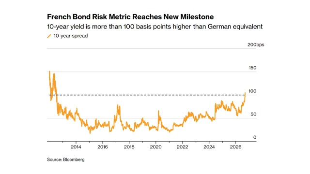
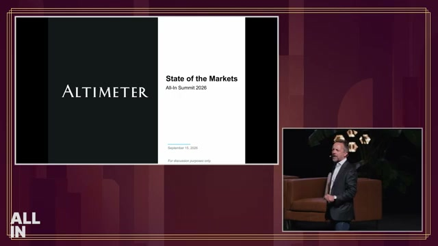
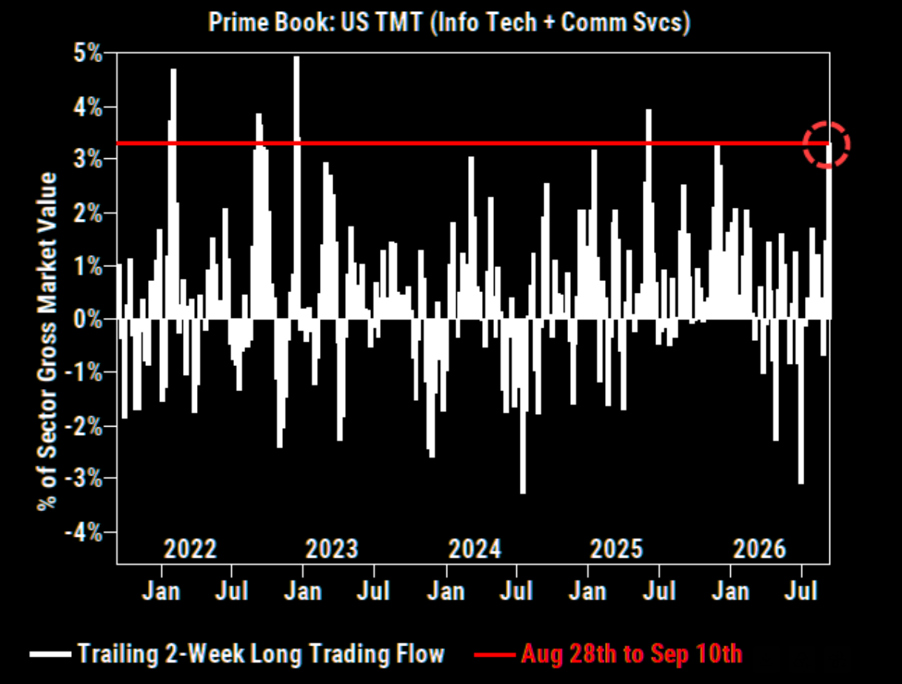
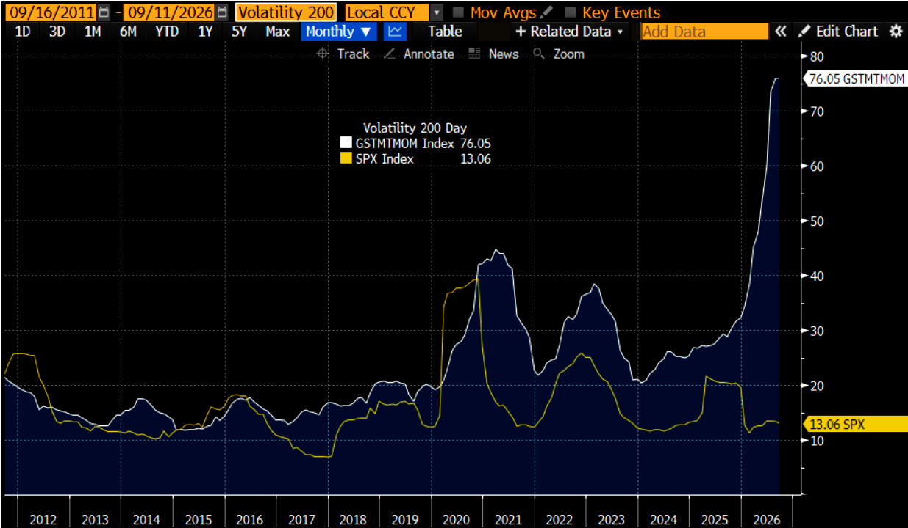
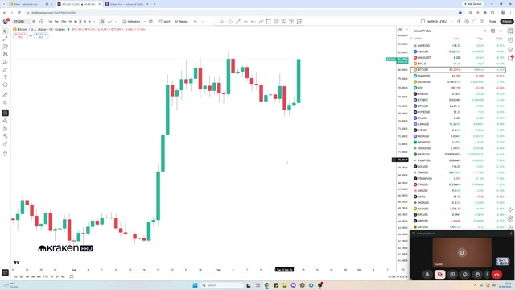
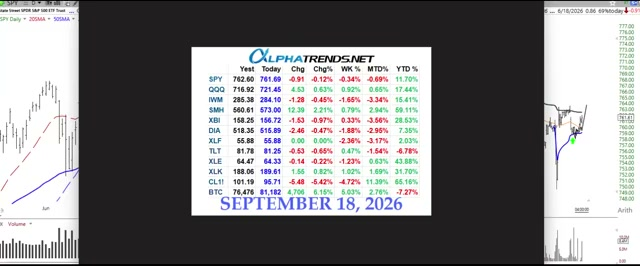
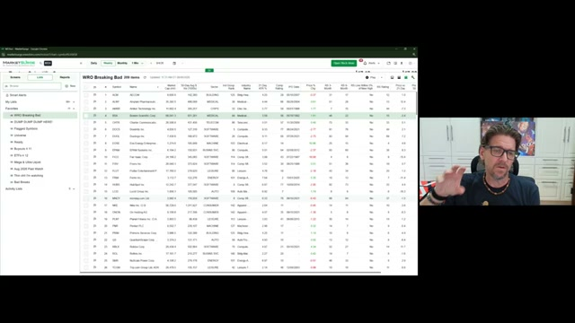

Language / 语言切换: English | 中文版
Market Weekly: Macro & Multi-Asset Intelligence Briefing
Language Switch: English | 中文版
Coverage Period: September 13, 2026 – September 20, 2026
Source Universe: 42 in-depth items across the Market folder (38 global video podcasts + 4 flagship institutional research memos)
Methodology: Map-Reduce synthesis | High-resolution timestamped video frame capture & native institutional chart citations
Executive Summary: Macro Clock & Key Market Fault Lines
The past week marked a defining crossroad where the Federal Reserve's initial rate cut collided with deep institutional skepticism over AI monetization, sovereign debt auction dynamics, and emerging physical bottlenecks:
flowchart TD
FOMC["September FOMC Rate Cut Delivered"] --> YieldCurve["Yield Curve Bear-Steepening<br/>(30Y Treasuries face foreign official buyer retreat)"]
FOMC --> FX["Central Bank Divergence<br/>(BOJ pauses on rate hikes / European sovereign spreads widen)"]
YieldCurve --> Equities["Equities Range-Bound at Highs<br/>(Mid-Cycle Transition underway)"]
subgraph Divergence["The Great AI & Tech Fracture"]
Citadel["Citadel Securities Global Roadshow Memo:<br/>Institutional sentiment on AI turns sharply negative;<br/>Intense scrutiny on Hyperscaler Capex ROI"]
Altimeter["Altimeter's Brad Gerstner (All-In Summit):<br/>'No AI Bubble' - Semis devour Nasdaq earnings,<br/>Real free-cash-flow underpinning infrastructure"]
Flow["Goldman Sachs Prime Book (via Market Ear):<br/>TMT net long flow spikes to 99th percentile;<br/>Severe CTA downside convexity & buyback blackout window"]
end
Equities --> Divergence
Divergence --> SingleStocks["Rotation into Physical Bottlenecks & Quality Alpha:<br/>• Citrini Robotics Field Trip: Actuators & Harmonic Drives<br/>• Generac (GNRC): +30% on $2.4B Amazon microgrid deal<br/>• Copart (CPRT) & Take-Two (TTWO) catalysts"]
Divergence --> Crypto["Digital Asset Liquidity Resilience:<br/>• BTC bears trap: Clean reclaim of key range support<br/>• Commodity & oil settlement via digital rails"]
1. Global Central Banking & Sovereign Debt Liquidity Disruption
1.1 September FOMC Debrief: Terminal Rate Anchors & Economic Projections
The Federal Reserve officially commenced its easing cycle this week. Former Federal Reserve senior trader Joseph Wang (September 2026 FOMC Debrief) notes:
- Terminal Rate Guidance: Officials nudged their long-term neutral rate assumptions higher, anchoring terminal rate projections around 3.0% – 3.25%, signaling a recalibration rather than emergency panic easing.
- Morgan Stanley's Perspective: In Why the Fed May Have Further to Go, Morgan Stanley argues that resilient labor dynamics and persistent services inflation require policy to stay restrictive longer ("Higher-for-Longer") than interest rate futures currently price in.
1.2 The 30-Year Treasury Conundrum: Where Have the Long-End Buyers Gone?
While short-term yields dropped post-FOMC, the long end of the US Treasury curve failed to rally, reflecting acute supply-demand imbalances. The Monetary Matters Network featured Trojan Wealth founder David Busch (Why The 30-Year Treasury Lost Its Biggest Buyers):
Figure 1: David Busch dissects foreign reserve managers' retreat from long-duration US Treasuries (Watch at 02:30)
- Foreign Reserve Managers Retreat: Foreign central banks and sovereign wealth funds—historically the price-insensitive anchor buyers of 30-year paper—have pulled back due to FX defense and geopolitical diversification.
- Structural Surge in Term Premium: Facing annual US federal budget deficits exceeding $1.8T, domestic pension and insurance funds require substantially higher term premiums to absorb 30-year issuance, driving curve steepening.
1.3 Non-US Central Bank Shifts: BOJ Hold & European Sovereign Credit Spreads
In Markets Weekly September 19, 2026, Joseph Wang mapped key global spillover risks:
| Institution / Sovereign |
Key Action |
Market Implication |
Timestamp Reference |
| Bank of Japan (BOJ) |
Governor Ueda kept rates unchanged and struck a dovish tone, dampening expectations for imminent hikes |
The yen rally stalled; the violent yen carry trade unwind took a breather, averting immediate cross-market margin liquidations |
Watch at 01:15 |
| Bank of England (BOE) |
Kept policy rate unchanged, fine-tuned quantitative tightening (QT) schedule |
Sticky UK services inflation leaves BOE cautious, sustaining GBP resilience against USD |
Watch at 05:03 |
| French Sovereign Debt |
Political fragmentation and budget deficit impasses drove 10-year French OAT-Bund spreads to new cycle highs |
Sovereign credit risk repricing in Europe, prompting defensive flows into Bunds, US short-term paper, and Gold |
Watch at 09:30 |

Figure 2: Joseph Wang analyzes the widening French OAT-Bund spread and European sovereign risk (Watch at 09:30)
2. Equities in the Crosshairs: The Great AI Debate & Quantitative Flow Fragility
The debate over the sustainability of Big Tech capital expenditure reached fever pitch this week, contrasting on-the-ground institutional fatigue with venture capital conviction.
2.1 The Bearish Warning: Citadel Securities Global Roadshow Intelligence
Citadel Securities published its global roadshow dispatch 2H September: Getting Closer, delivering a sobering assessment of institutional positioning:
"I am currently on a multi-country global roadshow, and the biggest change I have noticed is how quickly sentiment around AI has turned negative."
Citadel identified three decisive shifts in client conversations:
- Pivot from Compute Arms Race to ROI Rigor: Institutional investors are increasingly uncomfortable with hundreds of billions in Hyperscaler depreciation without clear enterprise ARR monetization.
- Defensive Vulnerability in Core Moats: Concerns that AI Agents and open-source models are actively fragmenting traditional search, ad inventory, and incumbent SaaS seats.
- Extreme Positioning Crowding: The Magnificent 7 are no longer insulated from macro rotation; the FOMC cut served as a liquidity event for trimming crowded winners.
2.2 The Bullish Counter: Altimeter's Brad Gerstner at All-In Summit
Speaking at the All-In Summit 2026, Altimeter founder Brad Gerstner (Brad Gerstner: No AI Bubble, Semis Eat the Nasdaq) directly rebutted the bubble narrative:

Figure 3: Brad Gerstner presents Altimeter's State of the Markets at All-In Summit (Watch at 02:00)
- Semis Eat the Nasdaq: Semiconductor companies now generate an unprecedented share of aggregate Nasdaq earnings. Unlike the 1999 Dot-Com era of unmonetized eye-balls, current infrastructure spend is backed by tens of billions in real free cash flow.
- The Take-Off Lag: While physical infrastructure deployers lead by 18-24 months, application-layer software monetization follows an S-curve adoption pattern. Pauses in investor sentiment offer generational entry points for compounders.
2.3 Microstructure Warning: Goldman Sachs Prime Book via Market Ear
Quantitative flow monitor market ear (Momentum Breaks, CTA Downside Convexity Builds) revealed acute positioning vulnerability through Goldman Sachs Prime Brokerage data:
| Indicator |
Observed Level |
Tactical Implication |
| GS TMT Net Long Inflow |
Surged to the 99th historical percentile over trailing 2 weeks (Figure 4) |
Extreme crowding as institutional capital treated mega-cap tech as a cash-surrogate hedge |
| TMT Momentum Volatility (GSTMTMOM) |
200-day rolling volatility spiked to 76.05, vs. S&P 500 volatility at 13.06 (Figure 5) |
Violent internal dispersion; individual tech leaders triggering sharp multi-standard-deviation selloffs |
| CTA Convexity & Buyback Blackout |
Systematic trend-followers sitting on asymmetric downside triggers during the pre-earnings corporate buyback blackout |
Absence of daily corporate buyback bids amplifies gap-down severity if key moving averages break |


Figures 4 & 5: Goldman Sachs Prime Book shows TMT 2-week flow at 99th percentile extreme (Left) and TMT volatility at historic highs (Right)
3. Industry Deep Dives: Robotics Tipping Point & Single-Stock Alpha
With index-level momentum stalling, smart money rotated into tangible physical bottlenecks and resilient secular business models.
3.1 Citrini Research Field Trip: The Humanoid Robotics Tipping Point
Independent research boutique Citrini Research published a landmark 36,000-character ground-level investigation, Robotics Tipping Point: A Citrini Field Trip:
Figure 6: Citrini Research inspects precision dexterous hands and high-torque actuator engineering on site
- The Real Mechanical Bottlenecks: The primary constraint on humanoid robotics scaling is not compute or simulation, but mechanical physics: dexterous hand actuators, miniature harmonic drive speed reducers, and 6-axis force/torque sensors.
- The Cost Deflation Curve: Japanese and Chinese precision machining supply chains are compressing per-joint actuator costs from several thousand dollars down to the low hundreds.
- Physical Generalization Crossing 95%: Leveraging Vision-Language-Action (VLA) foundation models, success rates in real-world electronics assembly tasks improved from ~70% to >95% over the last two quarters.
- Investment Vector: Highest risk-adjusted alpha resides not in capital-intensive OEM integrators, but in the near-monopoly component suppliers: frameless torque motors, harmonic gears, and micro-precision bearings.
3.2 Single-Stock Catalysts & Company Teardowns
graph LR
A["Selected Equity Catalysts"] --> B["GNRC (Generac Holdings)<br/>Surges +30%"]
A --> C["TTWO (Take-Two Interactive)<br/>GTA 6 Super-Cycle"]
A --> D["CPRT (Copart)<br/>Total Loss Secular Moat"]
B --- B1["Long-term multi-billion agreement with Amazon AWS<br/>Supplying $2.4B in data center backup power for 2027-2028"]
C --- C1["Dumb Money Live: GTA 6 pre-orders<br/>Tracking towards historic high watermark; discounted multi-year cash flows"]
D --- D1["We Study Billionaires: Vehicle electronics complexity<br/>elevates collision total loss frequency from 15% to 22%+"]
- Generac (GNRC) —— AI's Power Bottleneck Monetized:
- Seeking Alpha (Amazon Supercharges Generac) highlighted GNRC's 30%+ surge following its $2.4B supply agreement with Amazon AWS. The market's anxiety over grid interconnection delays has directly turned into contracted hardware backlog for industrial generators and microgrids.
- Take-Two Interactive (TTWO) —— Multi-Year Gaming Catalyst:
- Dumb Money Live (GTA 6 Has Me Buying Take-Two) evaluated the gaming entertainment cycle. With GTA 6 marketing milestones approaching, pre-order bookings are projected to establish a new industry record, providing defensive secular growth detached from macro consumer weakness.
- Copart (CPRT) —— The Compounding Machine:
- We Study Billionaires (Copart Stock: Is CPRT now a Buy?) conducted a valuation teardown of the salvage auction monopoly. As modern vehicle sensor and battery complexity drives total loss frequency to historic highs (22%+), insurance carriers are pushed to liquidate salvage through Copart's marketplace, providing inflation-resistant fee streams.
4. Digital Assets & Alternative Liquidity Dynamics
Crypto markets staged a significant technical and narrative recovery this week, weathering early downside pressure and reclaiming multi-month support.
4.1 Bitcoin Bear Trap Confirmed: TechnicalRoundup Execution
Leading crypto trading podcast TechnicalRoundup (Bitcoin Bears Had Their Chance) broke down Bitcoin's daily market structure on Kraken Pro:

Figure 7: CryptoDonAlt highlights Bitcoin's swift daily reclaim of key range support, trapping short sellers (Watch at 02:00)
- Liquidity Sweep & Failed Breakdown (SFP): Bitcoin dipped below range lows to trigger resting stop-loss orders before aggressively rebounding on volume, establishing a textbook bear trap.
- Volume-Weighted Value Area: Daily closes successfully recovered the volume-weighted point of control, shifting the immediate bias back toward upper range liquidity targets.
4.2 Commodity Settlement via Digital Rails: 1000x Macro Take
In 1000x (Crypto Is Used To Buy Oil?! FED Meeting, And Economy Ripping), hosts discussed how global sanctions friction and cross-border settlement costs are quietly pushing energy transactions and trade finance onto regulated stablecoins and digital rails, cementing digital assets' institutional utility beyond retail speculation.
5. Professional Trading Playbooks, Quantitative Rules & Mindset
Amid chop and headline-driven volatility, veteran market operators reinforced core execution and risk preservation frameworks.
5.1 Brian Shannon (AlphaTrends): Multi-Timeframe Anchored VWAP Framework
Technical analyst Brian Shannon (Stock Market & Crypto Analysis for Week Ending 9/18/26) reviewed key benchmark performance across asset classes:

Figure 8: Brian Shannon's cross-asset matrix as of September 18, 2026, displaying performance across SPY, QQQ, SMH, CL, and BTC (Watch at 01:30)
- The Anchor Rule: Key AVWAPs anchored from the August correction lows serve as critical support lines for SPY and QQQ. Despite intermediate index chop, broader Stage 2 structural uptrends remain intact as long as benchmarks trade above these volume shelves.
5.2 Mike Webster: Navigating Institutional "Bad Breaks"
Former William O'Neil portfolio manager Mike Webster (WRO #89 Bad Breaks) detailed the disciplined handling of sudden institutional distribution:

Figure 9: Mike Webster breaks down the MarketSurge watchlist for institutional distribution signals (Watch at 03:00)
- Defining a Bad Break: When a core leader unexpectedly slices through its 21-day or 50-day moving average on 1.5x+ average daily volume, it represents institutional liquidation.
- Rule Over Rationalization: Never hunt for fundamentally comforting reasons on the day of a breakdown. Automatically cut exposure by 50% to 100%. Preserving capital in cash is always superior to rationalizing a compounding loss.
5.3 David Gardner (Motley Fool Co-Founder): Embracing Loss Through Power-Law Investing
In Why you should aim to lose money in the market, David Gardner reflected on three decades of market-beating performance:
- Venture Mentality in Public Markets: Over his career, Gardner has incurred losses on a higher percentage of individual stock picks than almost any peer. Yet his total returns vastly outpaced benchmarks because individual winners appreciated 50x to 100x+.
- Asymmetric Payoffs: A position's maximum downside is limited to -100%, while the upside is unbounded. Tolerating volatility and acceptably frequent losses in elite compounders is the foundational mathematical prerequisite of long-term outperformance.
5.4 Ariel Hernandez (TraderLion): 7 Steps to a Systematic Edge
Professional trader Ariel Hernandez on the TraderLion Podcast outlined his end-to-end process:
Figure 10: Ariel Hernandez presents "Puzzle Pieces to Profitability" on the TraderLion Podcast (Watch at 04:00)
- The Mathematical Edge: Consistent profitability stems from strict alignment between positive expectancy formulas, progressive exposure scaling, and rigorous post-trade journaling rather than directional market forecasting.
6. Forward-Looking Tactical Playbook for the Week Ahead
[!IMPORTANT]
1. Rebalance Away from Crowded High-Beta Software:
- With Goldman Sachs and Citadel flagging 99th-percentile crowding in TMT momentum alongside negative sentiment roadshows, avoid chasing extended momentum names into the pre-earnings quiet period.
- Rotate into tangible physical AI infrastructure beneficiaries (on-site power generation like Generac, microgrid equipment, and high-precision mechanical automation components).
[!TIP]
2. Fixed Income Duration Positioning:
- Resist the impulse to blindly lengthen duration into 30-year Treasuries (TLT). Sovereign buyer fatigue and persistent supply issuance make 2-to-5-year belly paper or high-quality short-duration corporate credit significantly more attractive on a risk-adjusted carry basis.
[!NOTE]
3. Execution Discipline:
- Enforce Mike Webster's "Bad Breaks" rule on leading growth holdings that break key moving averages on abnormal volume. Maintain elevated cash buffers while systematic CTA positioning normalizes.